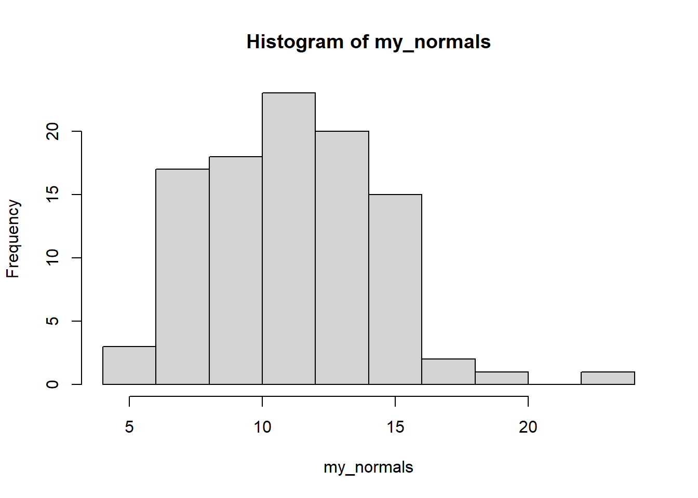
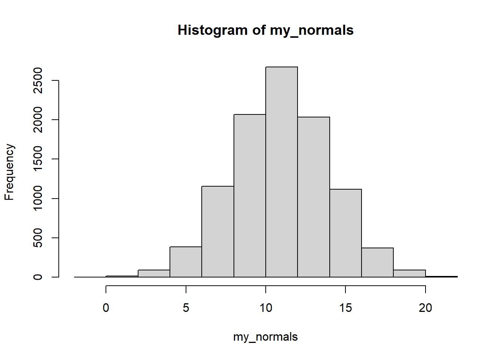

5 Simulations
If strings are the main feature of R that people didn’t realize they needed, simulation techniques are the 2nd. Many people start out saying they are a little intimidated by simulations, but end up feeling comfortable after a little bit of practice.
The initial discomfort usually comes from the fact that we are doing statistics in reverse. In statistical analysis, we feed the data to a fitting function (like lm()) in order to get parameter estimates. In contrast, in simulations we are studying how well those functions recover parameters, so we choose some parameter values ourselves, make data that are consistent with those parameters, then apply our fitting function to see how well it guessed the parameters we planted in our data.
5.1 Generating fake data
To get started, the first thing you need to know is how to generate fake random data. Fortunately, R has many functions for this, which generally start with r... for “random”.
For example, to make a random normal variable, you would call rnorm, which takes 3 arguments:
n, the number of numbers you want to generatemean, the mean of the population you want to be drawing fromsd, the standard deviation of the population you want to be drawing from
my_normals <- rnorm(n = 100, mean = 11, sd = 3)
hist(my_normals) Looking at the graph, we got just about what we would have expected. Will things get even more normal looking with a larger sample size? Definitely.
my_normals <- rnorm(n = 10000, mean = 11, sd = 3)
hist(my_normals)
5.2 How is this useful?
On their own, random numbers are useless. However, if we use them to make many fake datasets, we can apply the same analysis function to each dataset and keep track of the results. This allows us to ask questions like how often was an effect significant? (i.e., power). For example, let’s look at the power of a t-test.
R tells us that if we use the formula, the power of a t-test with a true effect size of d = .30 and a sample size of n = 150 in each group, we have a power of about .73
pwr::pwr.t.test(n = 150, d = .30)##
## Two-sample t test power calculation
##
## n = 150
## d = 0.3
## sig.level = 0.05
## power = 0.7355674
## alternative = two.sided
##
## NOTE: n is number in *each* groupLet’s make our own data and see if that holds when we try to simulate it.
5.3 Re-testing the t-test
To simulate several datasets, we need just a few ingredients. First, we need a dataframe that is set up to represent many datasets. We can use expand_grid() for this. With the following commands, it will make 1000 samples, each with two groups (0, 1), and each of those groups will contain 150 people.
many_datasets <- expand_grid(sample = 1:1000, group = 0:1, person_id = 1:150)
head(many_datasets)## # A tibble: 6 x 3
## sample group person_id
## <int> <int> <int>
## 1 1 0 1
## 2 1 0 2
## 3 1 0 3
## 4 1 0 4
## 5 1 0 5
## 6 1 0 6Now, let’s put some information in those groups. We’ll give group 0 a mean of 0 and group 1 a mean of .30. Assuming they both have a standard deviation of 1.0, this works out to a group difference of Cohen’s d = .30.
many_datasets <- many_datasets %>%
mutate(
score = ifelse(
test = group == 0,
yes = rnorm(n(), mean = 0, sd = 1),
no = rnorm(n(), mean = .30, sd = 1)))
head(many_datasets)## # A tibble: 6 x 4
## sample group person_id score
## <int> <int> <int> <dbl>
## 1 1 0 1 0.0418
## 2 1 0 2 -1.50
## 3 1 0 3 -0.799
## 4 1 0 4 0.351
## 5 1 0 5 -0.903
## 6 1 0 6 -1.55Now, let’s conduct a t-test on each one and look at the results.
many_datasets %>%
group_by(sample) %>%
nest() %>%
mutate(
fit = map(data, ~ t.test(score ~ group, data = .x)),
results = map(fit, ~ broom::tidy(.x))) %>%
unnest(results) %>%
ungroup() %>%
summarise(power = sum(p.value < .05)/length(p.value))## # A tibble: 1 x 1
## power
## <dbl>
## 1 0.724Voila! Without doing any complicated calculus, we were able to calculate the power of a t-test - and pretty accurately too!